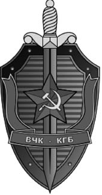
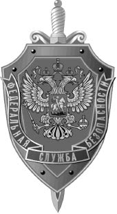

Zaman ilerledikçe o siyah 2600 hacker grubu tişörtleri giyen bilgisayar manyağı Tamer gitmiş, yerine giyimine özen gösteren, sosyal iletişim yeteneği ilerlemiş biri gelmişti. Bu değişimde bilgisayar dışında bir dünya olduğunu fark etmemle birlikte bu dünyanın bir takım farklı dengeleri olduğunun farkına varmamı sağlayan yaşadığım adli süreçlerin de etkisi oldu. Daha sosyal biri olmamla birlikte bu durum karşı cinsle olan iletişimime de yansımıştı. Bir süredir eskiye nazaran daha fazla kızla görüşüyordum.
Arkadaşlık sitelerinin henüz günümüzdeki gibi dejenere olmadığı bir dönemde bulmuştu beni Yulia. İlk mesaj ondan gelmişti. Resimleri olmayan, henüz yeni açılmış bir profile benziyordu. Kısa bir sohbete giriştiğimizde internet sitemi gezdiğinden bahsetti. Yaptıklarımdan etkilendiği belli oluyordu. Rusya’da yaşamasına, annesi, babası Rus olmasına rağmen iyi derecede Türkçe biliyordu. Türkçeyi Türkiye’deki Rus Konsolosluğu’nda çalıştığı dönemde öğrendiğinden bahsetti.
Yulia’nın babası komünist Rusya zamanlarında general olarak görev yapmış bir askerdi. Bu yüzden küçüklüğü karlarla kaplı dağların arasında bir nükleer tesiste geçmişti. Komünist rejim yıkıldıktan sonra ise babası politikacı olmuştu. Bugün de Rus enerji bakanı olarak parlamentoda görev yapıyordu. Kızın anlattığı şeyler bugüne kadar kızlardan duyduğum çıtkırıldım hikâyelere hiç benzemiyordu. Normal bir kız ojesi bozulmasın diye gayret ederken, Yulia kalaşnikov tüfeği saniyeler içerisinde söküp takabilecek kabiliyete sahipti.
Bir süre internet üzerinden konuştuktan sonra Türkiye’ye gelerek beni görmeye karar verdiğinden bahsetti. Nihayet hava alanına gittiğimde uzun boylu, renkli gözlü, saçları beline kadar uzanan güzel bir kızla karşılaştım. Uzaktan hiç de bir kalaşnikofu saniyeler içerisinde söküp takabilecek dişi Rambo kıvamında birine benzemiyordu. Ojesi bozulmasın diye gayret edebilecek kadar bakımlı bir kızdı. Sıcak bir selamlaşmadan sonraki sohbetimiz esnasında birbirini uzun zamandır tanıyan iki insan gibi konuşabildiğimizi fark ettim. Her şey hızla gelişiyordu. Onu kısa sürede hayatıma soktuktan sonra sık sık görüşmeye başladık. Türkiye’ye sadece beni görmek için gelip gidiyordu. Laf arasında sürekli söylediği şey mutlaka Rusya’ya gelmem gerektiğiydi. Oranın doğal güzellikleri, yaşamı, yeni müşteriler açısından sahip olduğu iş imkânlarını bana anlatıp duruyordu.
Yulia Türkçe, İngilizce ve farklı Rus dillerini çok iyi derecede konuşan kültürlü bir kızdı. Edebiyatla, sinemayla, politikayla yakından ilgiliydi. Konuşurken beden dilini çok iyi kullandığı gibi, karşısındakinin mimiklerini ve beden dilini kolayca okuyabiliyordu. Anlatılanı dinlerken kilit bazı sorular sorarak sohbeti sürükler, daha fazla şey öğrenmeye çalışırdı. Birlikte vakit geçirdikçe, birbirimize dair alışkanlıklarımız artıyordu. Türkiye’ye geldiği zaman gitmek istemiyor, gitmesi gerektiği zaman da bol bol gözyaşı döküyordu. Klasik bir erkek defosu olan “Kadın gözyaşlarına kayıtsız kalamama” durumundan ötürü aklıma takılan bazı şeyleri görmezden geliyordum.
Yulia devlete bağlı özel bir denetim biriminde çalışıyordu. Beraberindeki 15-20 kadar silahlı görevliyle birlikte Çeçenlere ait kumarhaneleri basıp vergi denetimleri yapıyorlardı. İşletmeye silahlı adamlarla birlikte baskın yaptıktan sonra, tüm çalışanlar ellerini duvara dayamış biçimde beklerken bir takım belgeleri, para transferlerini kontrol edip vergi kaçağı olup olmadığına baktıklarından bahsediyordu. Gün içerisinde milyonlarca dolar kazanan çok sayıda kumarhanenin tek kuruş vergi vermediğini ortaya çıkartarak bu işyerlerini mühürlüyorlardı.
Özünde Çeçenleri Rusya’da bitirmeye yönelik başlatılan bu operasyonun mali ayağında öncelikle Çeçenlere ait işyerlerinin kapatılması yer alıyordu. Yaptığı işin ayrıntılarını öğrenince bu işin çok tehlikeli olduğunu, ona zarar gelmesinden çekindiğimi söyleyerek ayrılmasını istedim. Aslında amaçladığım şey yaşamına ne kadar müdahale etmeme izin verdiğini ölçmekti. Birkaç gün içerisinde işten ayrıldığını söyleyerek beni şaşırtmayı başarmıştı.
Yine de başından beri içimi kemiren düşünceler peşimi bırakmıyordu. Ta ki Yulia tüm şüphelerimi doğrular nitelikte bir hikâye anlatana dek!

KGB amblemi.
İki adamın kendisini takip ettiğinden şüphelenmesiyle başlayan hikâye, eski adı KGB yeni adı FSB olan Rus gizli örgütünden olan bu kişilerin kendisiyle iletişime geçerek Rus gizli servisine ait bir sınava girmeyi düşünüp düşünmediğini sormalarıyla başlamış. Bana göre ise bu zaten FSB hesabına çalışan Yulia için baklayı ağzından çıkarma vaktinin geldiği anlamındaydı.
KGB veya Devlet Güvenlik Komitesi, eski SSCB’nin gizli servisiydi.
1954 yılında iç istihbaratın NKVD birimi ile İçişleri Bakanlığı’nın MVD biriminin birleşmesiyle meydana gelen KGB’nin merkezi Moskova’daki Lubyanka Meydanı’nında bulunuyordu. 1991 Ağustosu’ndaki ihtilal girişiminde zamanın KGB Başkanı General Vladimir Kryuçkov’un rolü olduğu ispatlanınca General Vadim Bakatim’e verilen emirle KGB 1991’de resmen kaldırılıyor ve Rusya’da KGB’nin görevini artık FSB ve SVR üstleniyordu. Beyaz Rusya’daki gizli servisin adı ise halen KGB şeklinde.

FSB amblemi.
Rusya Federasyonu Federal Güvenlik Teşkilatı (FSB) ana idari binası Kızıl Meydan’da Moskova’nın merkezinde KGB’nin eski ana idari binası ile aynı yerde.
Yulia’ya iş teklifinde bulunan FSB, Rusya devletinin iç güvenliğinden, karşı casusluktan ve organize suçlardan, terörizmle ve uyuşturucu kaçakçılığıyla mücadeleden sorumlu. Ancak, kimileri iç muhalefeti bastırmakla uğraştığını, Rusya’nın nüfusunun tamamını denetim altına almaya çalıştığını, siyasi olayları eskiden KGB’nin yaptığı şekilde etkilemeye çalıştığını iddia ediyor.
Bu amaçlarına ulaşabilmek için FSB’nin kitlesel dinleme ve gözetleme yaptığı, gazetecilerin ve muhaliflerin baskı altında tutulmasının da bulunduğu çeşitli aktif tedbirlere başvurduğu söyleniyor.
Terörizmle mücadelede toplumun ilgisini çekmek ve halktan destek almak için teröristlerce gerçekleştirilen vahşet görüntülerinin kurumun internet sitelerinde yayınlanması da propagandanın örneklerinden. FSB’nin, diğer ülkelerde ayrı yapılanmalar altında faaliyet gösteren bütün iç güvenlik ve istihbarat kuvvetlerinin görevlerini üstlendiğini, sadece bir emniyet ve istihbarat teşkilatı değil aynı zamanda eski KGB gibi bir siyasi güç haline geldiğini söyleyenler de var.
FSB gibi tehlikeli bir gizli servisin profili buyken karşımda muhtemelen onların ajanlarından biri duruyordu. Yulia, FSB’nin istediği sınava girip girmemekle ilgili fikrimi sordu. Benim için bir sakıncası olmadığını söylesem de onun için endişelendiğimi söylemeden edemedim. Sınava girdi ve ne tesadüftür ki gizli bir ajana ait tüm meziyetlerin toplandığı kız arkadaşım sınavda üstün başarı gösterdi.
Sınavı başarmıştı ama ajan olma teklifini kabul etmek istemediğini söylüyordu. Yaşamının kısıtlanmasını, hele ki benimle görüşmesinin engellenmesini kabul edemeyeceğini söyledi.
Dünya küçük olacak ki kendisine tanıdığı bir hacker olup olmadığı, yapılması gereken bazı şeyler olduğu, bunların karşılığında hiçbir fedakârlıktan kaçınılmayacağı söylenmişti. Bunu bana anlatması “Rus gizli servisi için çalışır mısın?” demenin üstü kapalı biçimiydi. Böyle bir şeyin olamayacağını söyleyerek konuyu apar topar kapattım. Zaten MİT ve JİTEM’den gelen haberler Yulia ile olan ilişkim yüzünden Türk gizli servislerinin mutsuz olduklarını söylüyordu.
Sanki mühim bir şey konuşacak olsam telefonda konuşacakmışım gibi, cep telefonumu hem MİT hem de JİTEM ayrı ayrı dinliyordu.
Daha ajanlık sınavıyla ilgili olayın dumanı tüterken, Yulia telaşlı şekilde MSN’den bir şeyler yazmaya başladı. Korkmuş görünüyordu. Sanırım Rus gizli servisiyle çalıştığından ilk defa o zaman kesin olarak emin olmuştum ki aramızdaki konuşmayı bile kaydetmişim. 22 Ekim 2007 yılında gerçekleşen bu konuşmada Yulia FSB’ye gitmek zorunda kaldığından, orada benimle ilgili bazı bilgilere ulaştığından bahsediyordu. Rus gizli servisinin beni araştırdığını, ellerinde benim hakkımda çeşitli bilgiler, fotoğraflar gördüğünü söyledi.
Yulia says: seni hic beklemedigim yerde gordum
Tamer says: nerede?
Yulia says: eve geciyorum –oradan anlaticam– pardon burasi sakat
Tamer says: bir şey diyorsan tamamla ama
Yulia says: ben sana 1 saat once tamer dedim –bekledim – yoktun– cevap veremedin yani. tamam anlatiyorum
Tamer says: eee
Yulia says: bugun ben fsb’ye gitmek zorunda kaldim. oralarda – onlarin bazlarda senin hakkinda cok anlatilan sey var ve resimlerin felan.
Tamer says: dalga geçiyorsun
Yulia says: deli miyim?
Tamer says: ne alakası var
Tamer says: ne yazıyor benim hakkımda?
Yulia says: pc ve internetle ilgili bolumunde bazi insanlarin hakkinda yaziliyor orada
Yulia says: yani internet uzerinden suclari hakkinda vs vs. bazi insanlarin isimleri hacker’ler galiba hepsi
Yulia says: bir suru yabanci insanlari var
Tamer says: ee yani? ne demek oluyor sence bu
Tamer says: bu belgeleri sen nasıl gördün gizli falan mı bunlar
Tamer says: ne yazıyor
Yulia says: evet gizlidir.
Yulia says: ne demek oluyor bu, ben de bilmiyorum – gorunce – tessaduffen gordum – sasirdim
Yulia says: yaptigin seyleri yaziyor daha cok
Yulia says: biraz senin hakkinda da yani ozetle ozel hayat felan. bir-uc resimlerin var
Yulia says: gormedim ben onlari daha once
Tamer says: görmediğin resimler derken?
Yulia says: garip oldum
Tamer says: nerede çekilmiş resimler?
Yulia says: sen de onlari gormeyebilirdin de – sanki insan oldugu yerde cekilmis resimleri – sonra daha yakinlasmis yuzun felan
Tamer says: hımm ilginç
Yulia says: bana senden daha cok ilginc oldu ama
Yulia says: beni o an dusunsene?!?!?!
Tamer says: evet
Tamer says: tabi senin fsb’nin gizli bilgilerinin olduğu yerde niye olduğun da ilginç canım...
Yulia says: babamla geldim ben. yoksa oraya girmem mumkun degildi. internet sucu oldu isinde onun icin o yere gittik
Tamer says: bu internet suçuyla ilgili mi bir dosya hazırlamışlar?
Tamer says: orda o yuzden mi ben varım?
Yulia says: bu bolumde bircok insanin hakkinda bilgi var – iyi ki benim yok – benim baktigim bolum internetle ilgili insanlar var. yani suc islemis ya da islememis – yetenekli olanlari bu konuda – ya da herhangi bir sekilde bu kurulusun goz altinda alinmis adamlarin bilgileri var
Yulia says: babam bir adamin bilgileri buluyordu – ben yani bakiyordum direkt o listeden
Yulia says: oraya gitmek cok istedim – babami yalvardim beni alsin diye
Yulia says: cok merak ediyordum bu yerini
Yulia, Rus gizli servisi FSB’nin dünya üzerinde izlediği hacker’lar olduğunu, bu hacker’ların özgeçmişleri ile yaptıkları şeyler hakkında, hatta günlük yaşamlarına dair ayrıntıların arşivlendiğinden bahsediyordu. Anlaşılan daha ben Yulia ile tanıştırılmadan önce Rus gizli servisi ajanları beni izleyerek takip ederek hakkımda bilgiler toplayıp, fotoğraflarımı çekmişti.
Yulia’nın Rus gizli servisiyle işbirliği yapmamı önerdiği teklifi ile gizli servisin elinde bilgilerimin olduğunu öğrenmem gibi olayların üzerinden belli süre geçti. Bu arada Yulia’nın Rusya’ya gitmemle ilgili ısrarı artarak devam ediyordu.
Babasıyla benim hakkımda konuşmuştu. Babası Rusya’nın en büyük bankalarından birine danışmanlık hizmeti vermem için bana müşteri bağlayabileceğini söylemişti. Hatta bana “Başkanlık sarayından resmi davetiye” bile gönderebileceklerinden bahsetti. Türkiye’nin en ünlü hacker’ına Rusya devleti özel davetiye gönderiyor! Elbette kulağa mantıklı gelmiyordu. Herhalde beni havaalanında vururlar diye düşündüm. Israrlarına dayanamayınca pasaportumu normal vize başvurusu için gönderdiğimde vize birkaç gün sonra elime ulaştı.
Vizem de çıktıktan sonra artık uyduracak bahanem kalmamıştı. Belki de Rusya’ya gittiğimde beni bir yere kapatıp aklıma bile gelmeyecek sistemlere girmek için zorlayacaklardı. Evet, burada devlet baba beni seviyor... Türkiye’de bana dokunmaya hevesli pek fazla insan olmasa da bunun da bazı sınırları var. Rusya ise bu sınırların epeyi dışında. Sudan bahanelerden kavga çıkartıp Yulia’dan ayrıldım. Elimde böyle net ipuçları varken risk alamazdım. Belki beni seven masum bir kadından, belki de Rusya’ya beni getiremediği için başarısız olmuş bir ajandan ayrılmıştım.